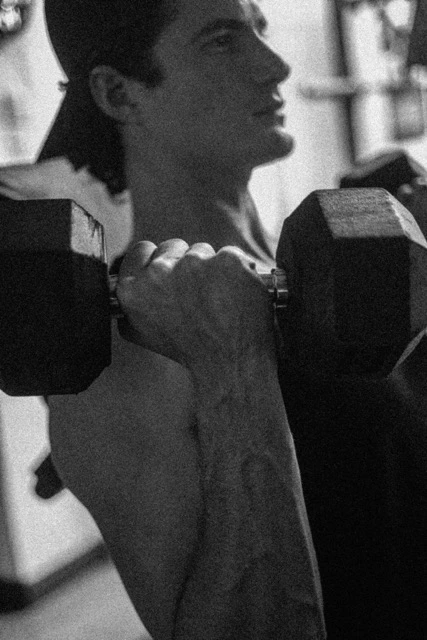
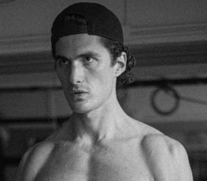
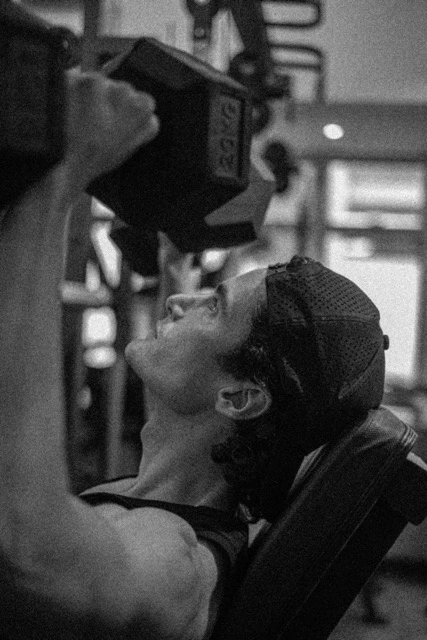
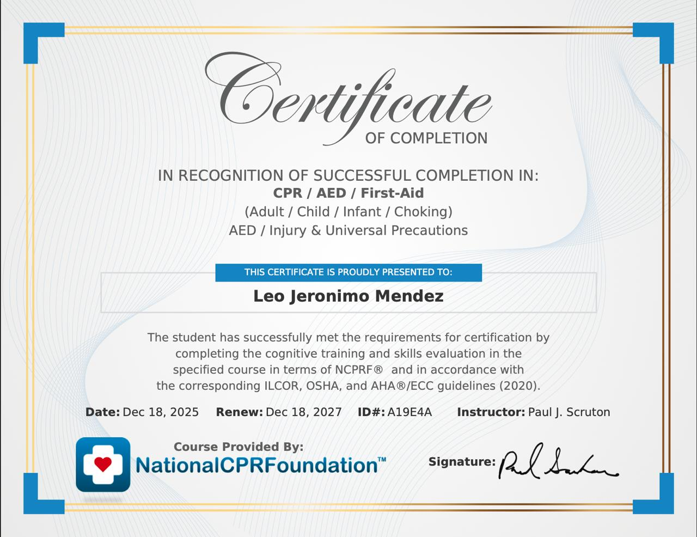

Argentina · International
Holistic Performance & Recovery Specialist · Coaching models & professionals to peak physical condition
True performance is built from the inside out — integrating strength, restoration, and the breath into a unified system.

NASM-certified programming built on progressive overload, functional movement, and precise body composition goals. Designed for athletes, executives, and media professionals.
Advanced Yin & Restorative Yoga woven directly into your training plan. Deep tissue release, postural alignment, and parasympathetic recovery.
Structured breathwork protocols for nervous system regulation, stress recovery, and peak performance. Science-backed. Deeply felt.


From 2015 to 2021, Leo built a six-year international modelling career across Hong Kong, Manila, and Taiwan — markets that demand the highest standards of physical discipline, body awareness, and professional presentation. What looked like a creative career was in reality an ongoing experiment in elite self-management: nutrition, sleep, body composition, recovery.
That lived knowledge became the foundation for formal study. In 2025 and 2026, Leo completed his NASM Certified Personal Trainer qualification, an advanced Yin & Restorative Yoga teacher training, and a Breathwork Facilitation programme through the Holistic Yoga Flow curriculum — all authorised by E-RYT 500 instructors.
Based in Hong Kong since 2015, Leo offers something rare: a native Spanish speaker with the certifications, the lived body knowledge, and the cross-cultural fluency to serve the city's international community at the highest level.
Specialised programming for body symmetry, postural alignment, and visual performance — for media professionals, models, and executives who require elite physical presentation.
NASM-certified programming tailored for international executives and high-performers. Strength and cardio combined with recovery modalities for sustainable, long-term results.
Guided sauna and ice bath immersion protocols grounded in recovery science. Leo supervises, educates, and coaches clients through each session for maximum physiological benefit.
All sessions available in English & Spanish · In-person at your facility or home gym

Ready to train with a holistic approach that actually works? Reach out in English or Spanish — Leo will respond personally.